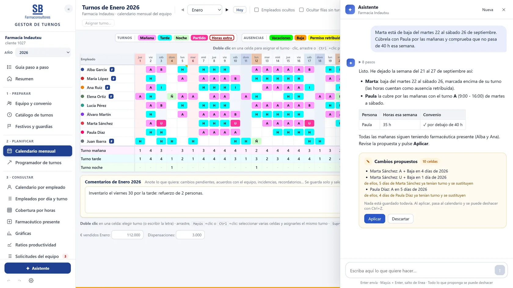
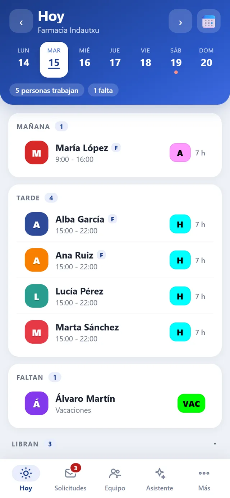

Del Excel a su aplicación
Su plantilla de siempre, convertida en una aplicación con usuarios, permisos, historial y acceso desde el móvil. Los mismos números, sin fórmulas rotas.
Aplicaciones a medida · Automatización · IA
Convertimos sus Excel y tareas manuales en aplicaciones propias, con inteligencia artificial donde de verdad ahorra tiempo. Y sustituimos suscripciones que paga cada mes por herramientas pensadas para usted.
¿Le suena?
Servicios
Partimos de cómo trabaja hoy. Solo cambiamos lo que le hace perder tiempo o dinero.
Su plantilla de siempre, convertida en una aplicación con usuarios, permisos, historial y acceso desde el móvil. Los mismos números, sin fórmulas rotas.
Extractos del banco, facturas, informes, avisos, cuadres. Lo que hoy se hace a mano cada semana, que se haga solo y sin errores.
Leer facturas y PDF, clasificar movimientos, responder sobre sus propios datos o proponer el cuadrante de la semana. IA donde ahorra horas, no por estar de moda.
¿Paga cada mes, por usuario, herramientas genéricas de las que usa una parte? Le hacemos una alternativa propia, con lo que necesita y nada más.
Algunas ideas de lo que se puede hacer:
Proyectos
Las dos nacieron de una hoja de Excel. El Gestor de turnos lo usan cada día las farmacias de SB Farmaconsultores; Flow lo abrimos ahora a cualquier empresa.
Sustituye a la hoja de cash flow por decenas. Lo que entra y sale de cada banco, lo que falta por cobrar y por pagar, y cuánto dinero habrá en las próximas semanas.
Empresa y cifras de ejemplo.
Una plantilla de Excel de calendario laboral convertida en aplicación para las farmacias clientes de SB Farmaconsultores: el titular planifica y cada empleado ve su calendario en el móvil.


Ahorro
Muchas herramientas se pagan por usuario y por mes, para siempre. A veces compensa. A veces, una aplicación propia sale más barata en pocos meses y además hace justo lo que necesita.
Es una cuenta orientativa. Le diremos con números, herramienta por herramienta, cuáles merece la pena sustituir y cuáles no.
Cómo trabajamos
Nos enseña su Excel o su proceso. Entendemos qué le quita tiempo. Sin coste.
Qué hará la aplicación, precio y plazo, por escrito y antes de empezar.
La prueba con sus propios datos y la ajustamos con usted.
La ponemos a funcionar, formamos a su equipo y seguimos a su lado.
Preguntas
Depende de lo que tenga que hacer. Tras la primera conversación le damos una propuesta cerrada, con precio y plazo, antes de empezar. Sin sorpresas.
Al contrario: partimos de su Excel. Importamos sus datos y respetamos su forma de trabajar. Si algo del Excel estaba mal calculado, se lo explicamos.
Una primera versión suele estar en pocas semanas. Le diremos el plazo concreto en la propuesta.
Los datos se guardan en servidores de la Unión Europea. A la IA solo se envía lo necesario para cada tarea, con proveedores que firman un acuerdo de tratamiento de datos. Siempre puede usar la aplicación sin la IA.
Para eso es a medida. Las mejoras se hacen sobre su aplicación, sin esperar a que un fabricante decida añadirlas.
Sí. Le damos de alta con 30 días gratis, importamos su Excel de tesorería y le ayudamos a ponerla en marcha.
Contacto
Le respondemos en un día laborable. Si lo prefiere, escríbanos directamente.
hola@iharlabs.com